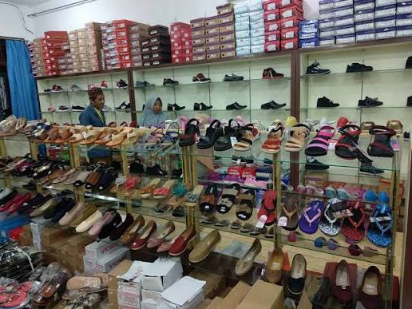

Pesatnya perkembangan teknologi informasi telah banyak dimanfaatkan oleh setiap perusahaan dalam meningkatkan kualitas layanan terhadap masyarakat. Pengaruh dan peranan TIK (Teknologi Informasi dan Komunikasi) terhadap kehidupan manusia sangat penting, karena banyak dimanfaatkan sebagian besar manusia khususnya yang melihat peluang bisnis dari peranan TIK tersebut, seperti halnya Bisnis online.

Toko Tiga Dara terus mengalami perkembangan dan akhirnya sudah membuka cabang kedua di sekitaran toko awal, hal itu menunjukkan bahwa pelanggan toko ini sudah banyak dan ramai dikunjungi. Namun rata-rata pelanggan dari Toko Tiga Dara merupakan penduduk yang bertempat tinggal di daerah yang sama dengan toko, dan dalam menjalankan proses bisnisnya Toko Tiga Dara masih menggunakan Metode Konvensional yaitu pelanggan harus langsung mengunjungi toko untuk melakukan pembelian barang. Masalah lain yang dihadapi dalam hal penjualan barang untuk pasar yang lebih luas seperti pemasaran barang terhadap pelanggan yang berada diluar kota masih sulit, karena penyampaian informasi tentang barang maupun informasi mengenai toko belum mampu diakses pelanggan lain yang berada diluar daerah penjualan.
: Atribut ini dimiliki oleh elemen html seperti <input> dan <textarea>, yang dimana fungsinya agar pengguna tidak dapat mengetik atau menghapus atau melakukan tindakan terhadap kotak input. Jadi inputan tersebut hanya bisa dilihat dan tidak bisa melakukan action terhadap input tersebut.
: Atribut ini dimiliki oleh elemen html seperti <input>, <select> dan <textarea>, yang dimana fungsinya mengingatkan user agar selalu mengisikan inputan jika inputan bisa diisikan. Biasanya ditandai dengan munculnya notifikasi dibawah input tersebut dengan "Please fill out this field"
: Atribut ini dimiliki oleh elemen html seperti <option>, yang dimana fungsinya untuk membuat pilihan tertentu yang kita inginkan terpilih otomatis
: Atribut ini dimiliki oleh elemen html seperti <input> bert-type "checkbox", yang dimana fungsinya untuk membuat kotak checkbox terpilih otomatis
Berikut navigasi dari Minitask 4, 5 dan 6 tentang Basic HTML Structure:
Dari hasil analisis yang telah dilakukan maka penulis dapat mengambil beberapa kesimpulan diantaranya sebagai berikut: